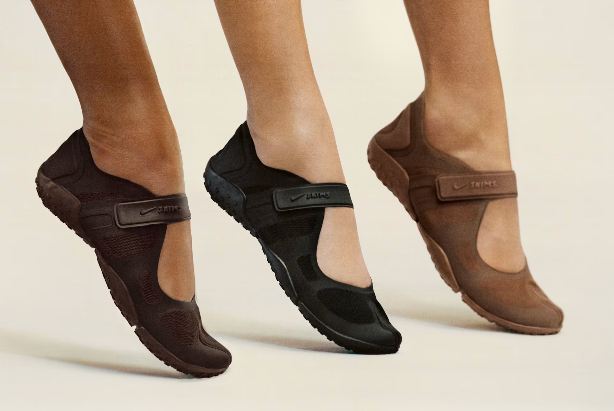
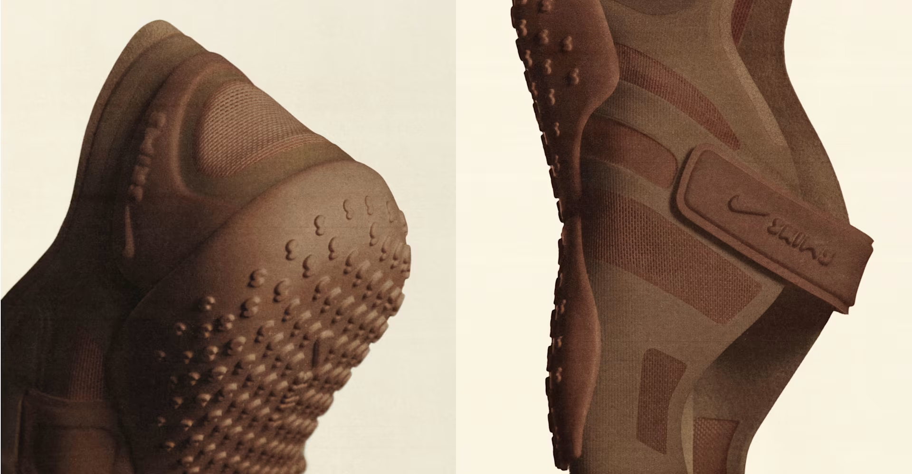

nickname***

240 블랙 선물포장
처음엔 살짝 투박해 보였는데 신다 보니까 오히려 포인트 되는 느낌이에요.
편해서 아무 때나 신기 좋고, 생각보다 활용도가 높은 신발이에요!



아이코닉한 나이키 리프트 스플릿 토 디자인이 몸의 움직임을 새롭게 만듭니다.

처음엔 살짝 투박해 보였는데 신다 보니까 오히려 포인트 되는 느낌이에요.
편해서 아무 때나 신기 좋고, 생각보다 활용도가 높은 신발이에요!
디자인 때문에 샀는데 신어보고 나서 진짜 놀랐어요. 발이 신발에 딱 감싸지는 느낌이라 오래 걸어도 피로감이 훨씬 덜하더라고요. 벨크로 스트랩이 장식처럼 보이는데 실제로 고정력이 꽤 좋습니다. 올블랙이라 어디에 코디해도 튀지 않고 자연스럽게 녹아드는 게 마음에 들어요. 재구매 의사 있습니다.
디자인이 좀 독특해서 처음엔 고민했는데, 막상 신어보니까 생각보다 훨씬 편해요.
스트랩이 있어서 발을 잘 잡아주는 느낌이고, 오래 걸어도 크게 피로하지 않았습니다. 요즘은 거의 매일 신고 다니고 있어요.
밑창이 두툼해서 그런지 쿠션감이 괜찮은 편이에요. 장시간 걸어도 발바닥 부담이 덜하고, 안정감 있게 잡아줘서 만족스럽습니다.
코디도 크게 안 타서 활용도 높은 신발이에요.
밑창 패턴이 독특해서 미끄럼 방지가 잘 될까 걱정했는데, 비 온 날 외출해봤을 때도 확실히 잡아주더라고요.
소재 자체가 방수 계열인지 물이 스며드는 느낌도 거의 없었고요. 활동성이 높은 날 신기에 딱 좋은 것 같습니다.
사이즈 고민 중인데요, 평소 255 신는데 발볼이 좀 있는 편이에요. 255로 주문하면 될까요?
아니면 한 사이즈 업해서 260으로 구매해야 될까요?
이 제품이 쿠션감이 어느 정도인지 궁금합니다. 밑창이 두꺼워 보여서 오래 걸어도 괜찮을 것 같긴 한데,
실제로 착용했을 때 발 피로도가 어떤지 알고 싶어요.
안녕하세요, 상품 잘 받았는데 상태 확인 후 문의드립니다. 받은 제품에 눈에 띄는 하자가 있어 교환 요청드립니다.
착용 전 확인한 상태이며, 제품 마감 부분에 문제가 있는 것 같아 정상 제품으로 교환을 받고 싶습니다.
안녕하세요, 고객님. 먼저 배송 과정 중 불편을 드리게 된 점 양해 부탁드립니다. 파손 상품은 별도의 비용 없이 회수 예정이며, 정상 상품은 회수 접수 완료 후 순차적으로 발송될 예정입니다. 교환 배송비는 당사에서 부담합니다. 추가로 궁금하신 사항이 있으시면 언제든지 문의해 주세요. 불편을 드린 점 다시 한 번 양해 부탁드리며, 빠르게 도움드릴 수 있도록 하겠습니다. 감사합니다.
벨크로 스트랩 내구성이 궁금해요. 자주 탈부착하다 보면 접착력이 금방 떨어지는 제품들이 있어서요.
장기간 사용해도 괜찮은 소재인지 알고 싶습니다.
배송 업체 ㅣ CJ 대한통운 (1588-1255)
배송 지역 ㅣ 대한민국 전 지역 배송
배송 비용 ㅣ 3,500원 / 구매 금액 50,000원 이상 시 무료배송
/ 제주 및 도서 산간 지역 별도 추가 금액 발생
배송 기간 ㅣ 주말·공휴일 제외 2일 ~ 5일
유의 사항
- 주문 폭주 및 공급 사정으로 인하여 지연 및 품절이 발생할 수 있습니다.
- 기본 배송기간 이상 소요되는 상품이거나, 품절 상품은 개별 연락을 드립니다.